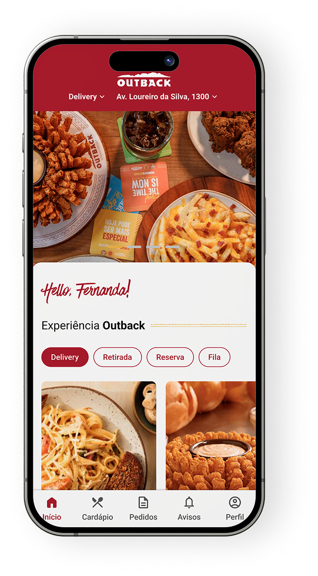
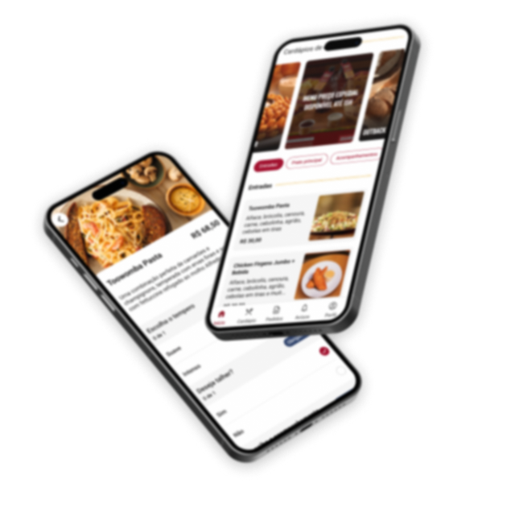

Felipe Amorim
Felipe AmorimSelected work / Outback
Customer experience · Food and hospitality
A better dining journey, from first tap to table.
A joined-up dining service informed by customer interviews and first-hand observation.
29%increase in sales reported for the project

Outback
Customer research and experience design
Digital ordering and on-premise service
The challenge
The experience continues after the order.
I interviewed more than 20 customers across Brazil and experienced the journey myself. The work looked across on-premise and off-premise dining to surface recurring needs and points where the service could feel fragmented.
My approach
Connect the digital and in-restaurant journey.
I brought delivery, collection, reservations and queueing into a clearer set of service choices. The mobile concept connects food discovery with the next practical action, while accounting for the experience around the meal.
Inside the work
One joined-up dining journey
Ordering, collection and the in-restaurant experience work together across the journey.

Next client brief